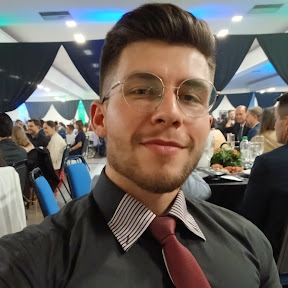

Quem sou eu?
Olá! Me chamo Marcus Picoli. Sou um estudante de tecnologia apaixonado por desenvolvimento web. Acredito que código bem escrito é uma forma de arte — funcional, elegante e com propósito.
Trajetória Acadêmica
Minha jornada na tecnologia começou com a curiosidade de entender como as páginas web funcionam. Cada disciplina é um novo desafio, e cada projeto entregue representa uma vitória conquistada com dedicação e muito código.
Atualmente estou explorando os pilares do desenvolvimento front-end: HTML5 semântico, CSS3 moderno e a lógica com JavaScript. Este blog em si é prova disso.
Interesses e Paixões
Fora das telas, me interesso por história, música, ciência, cultura e boa gastronomia — daí a seção de receitas. Acredito que criatividade e técnica andam lado a lado, e que um bom desenvolvedor também é um bom contador de histórias.
Objetivos
Meu objetivo é me tornar um desenvolvedor web back-end e me tornar um cientista de dados com alta expertise em IA.